A Comparison of Stride and Stripe-Width Values
Linux Software RAID Performance Comparisons
The Problem
The recommendation when using mke2fs is to set the "-E stride" value
to be the same as the underlying chunk size, and the "-E
stripe-width" value to be the stride times the number of data
spindles in the RAID. This experiment sees if these values make any
measurable difference when using an AES-256 encrypted RAID-5 system with an
underlying RAID-5 chunk size of 128KB and a payload alignment of
512KB. The stripe-wide was set to 4 times the stride size in these
experiements because they were done on a 4+1 RAID-5. The documented
best value for stride should be 128KB.
The Controller
- Supermicro AOC-SAT2-MV8
- 8 SATA II ports
- 64-bit PCI-X133MHz (tested in 32-bit PCI slot)
- Chipset: MV88SX6081
- Linux driver: sata_mv
- Cost: $99.99 from newegg.com
- Configuration: JBOD
The Test System
- Motherboard: Asus K8N-DRE
- Processors: Two 1.8GHz Opteron 244
- RAM: 8GB DDR400 running at 333MHz
- Slots: 1 32-bit PCI; 1 PCI Express x16
- Drives: Seagate Barracuda 7200.11 1000Gbytes ST31000333AS
- Drive cage: Supermicro CSE-M35T-1B 5-Bay Enclosure (fits in
three 5-inch chassis bays; sells for about $100-$120 from
newegg.com)
The Test Matrix
- Read Percentage: 100% (pure read), 50% (mixed), 0% (pure write)
- Random Percentage: 0% (sequential), 100% (random)
- Thread counts: 1 and 20
- Block sizes: 4k, 8k, 32k, 64k, 256k, 1m, 4m, 8m, 64m
- Targets: All 5 driver were tested simultaneously, as well as
each drive individually.
- All I/Os are issued using the O_DIRECT flag.
- All tests last 20 seconds.
Conclusion
Small strides (4KB and 64KB) have better performance for mixed and
write-only workloads. However, all strides have similar performance
for small I/O sizes across all workload types. Further, the
recommended stride=128KB and stripe-width=512KB have consistent
mid-range performance across all dimensions tested. Even for pure
read workloads, there is no compelling reason to use something other
than the recommendation.
Sequential Single Threaded Tests
A small stride does substantially better at small I/O sizes for a
pure read workload. For mixed workloads, all strides are similar.
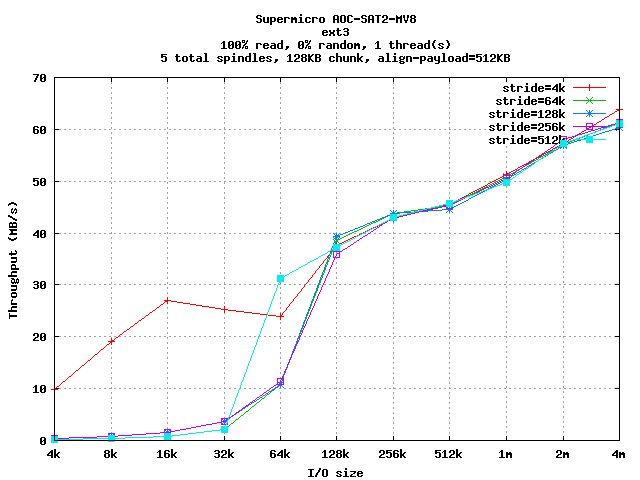
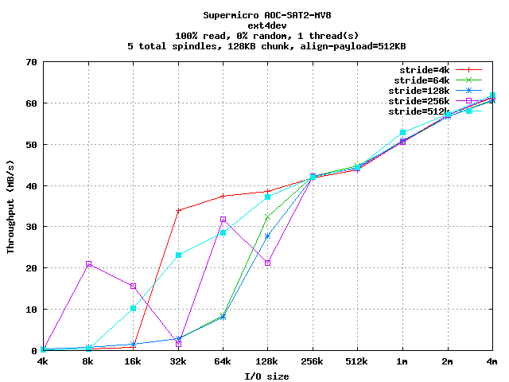
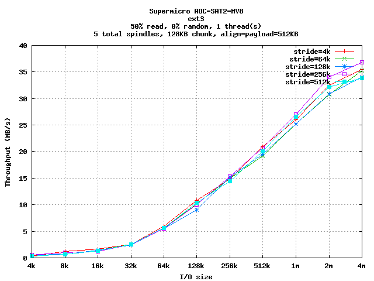
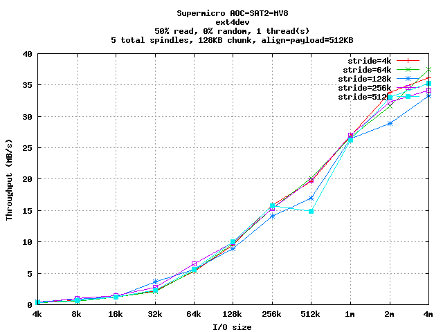
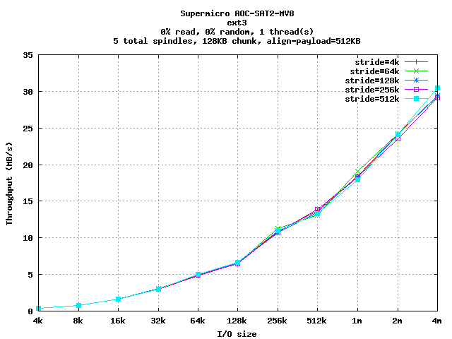
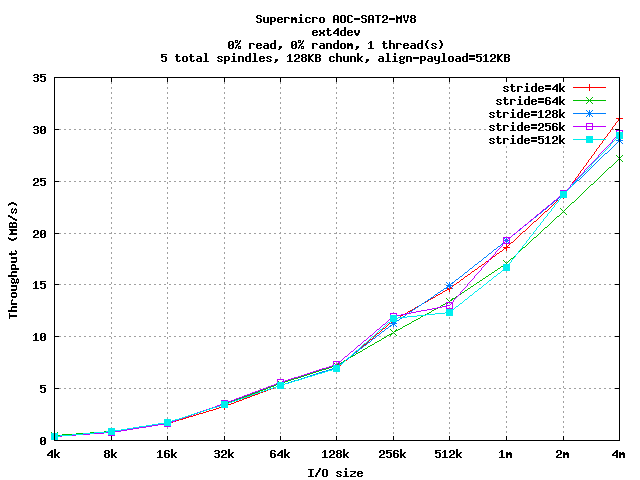
Random Single Threaded Tests
For pure read workloads, all strides are similar. When writes are
introduced a clear separation occurs, especially at larger I/O
sizes, where strides of 4KB and 64KB are similarly superior and
strides of 256KB and 512KB degrade performance.
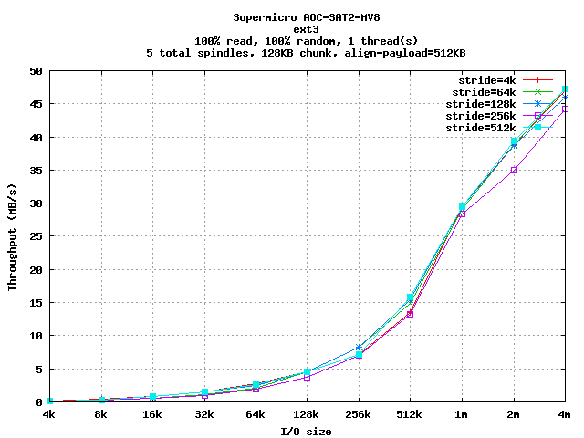
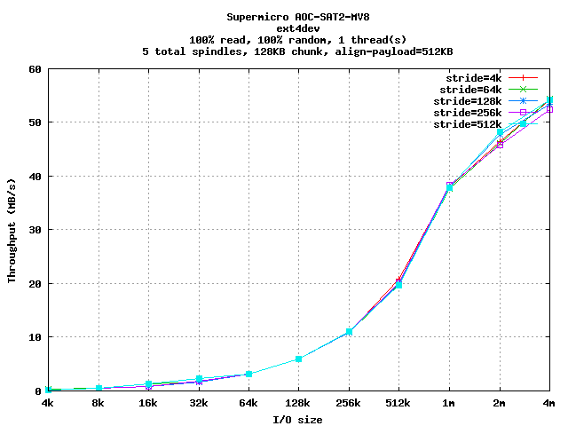
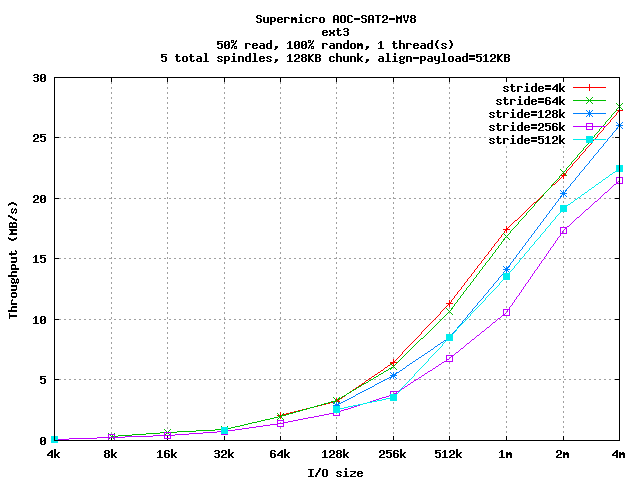
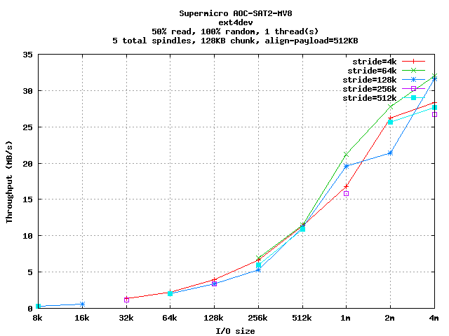
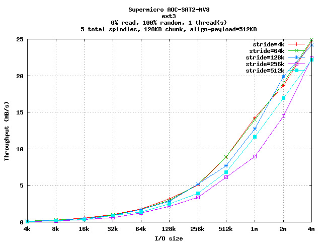
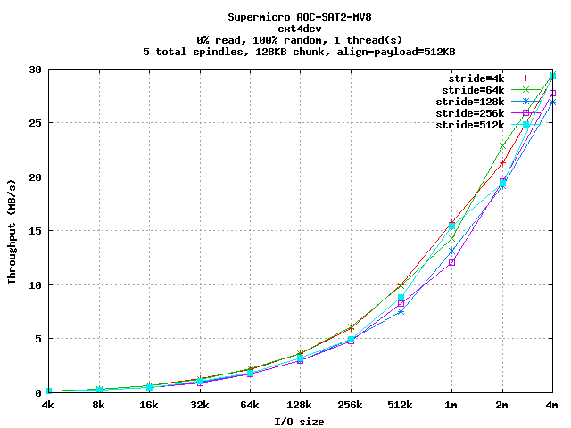
Sequential Multi-Threaded Tests
Performance is similar across strides, with some separation occuring
at higher block sizes. However there is no trend across file system
or workload types.
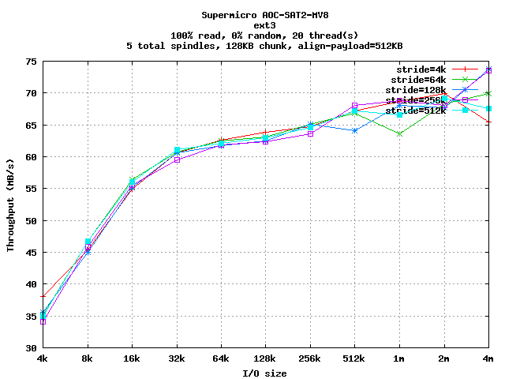
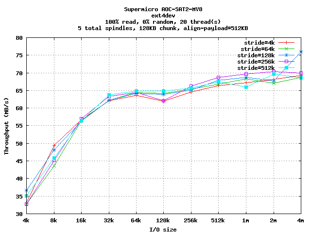
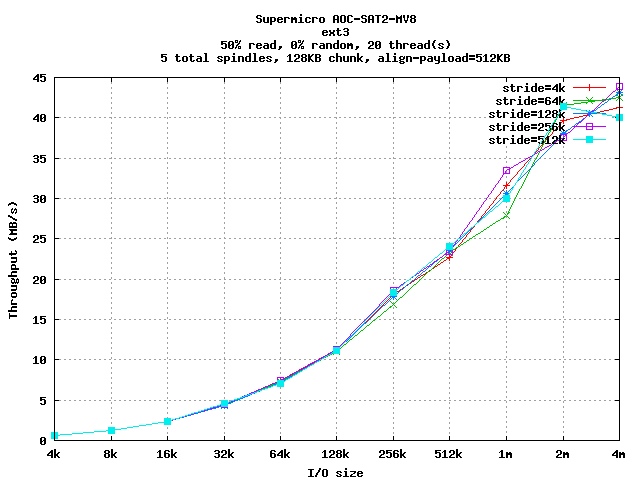
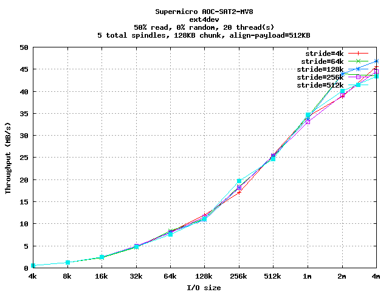
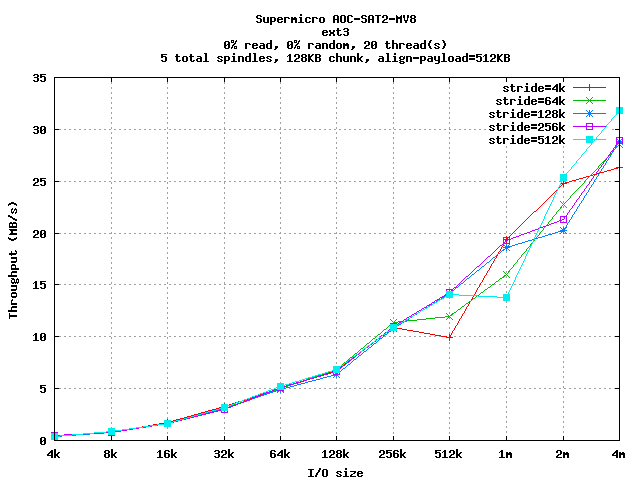
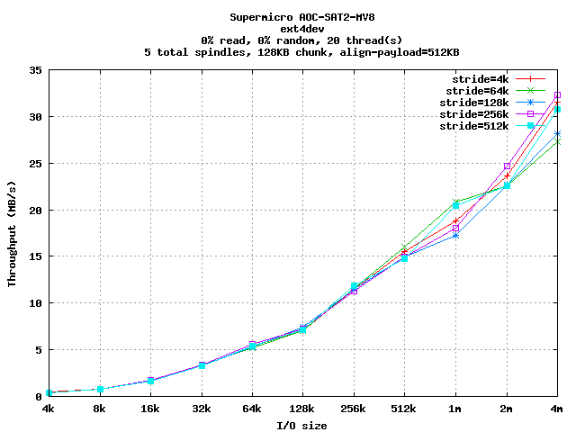
Random Multi-Threaded Tests
Performance is similar for read workloads, but 4KB and 64KB strides
are slightly superior for writes, with very large stides degrading
performance.
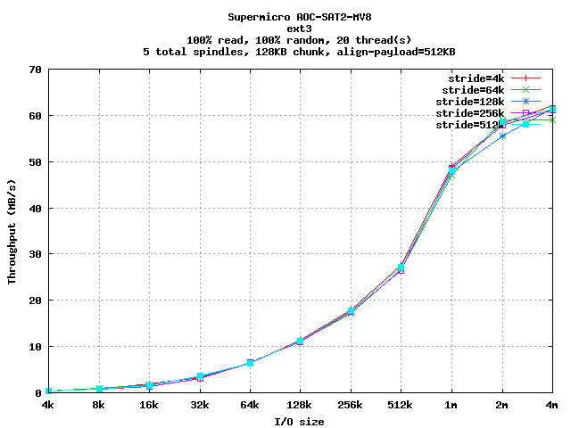
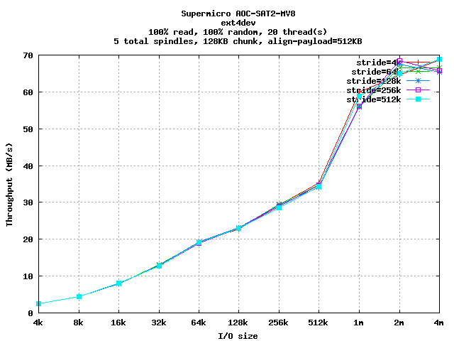
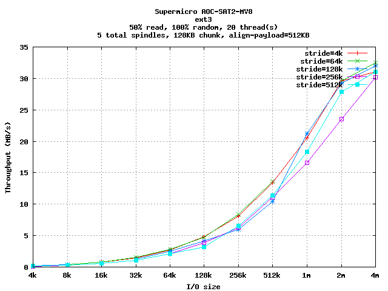
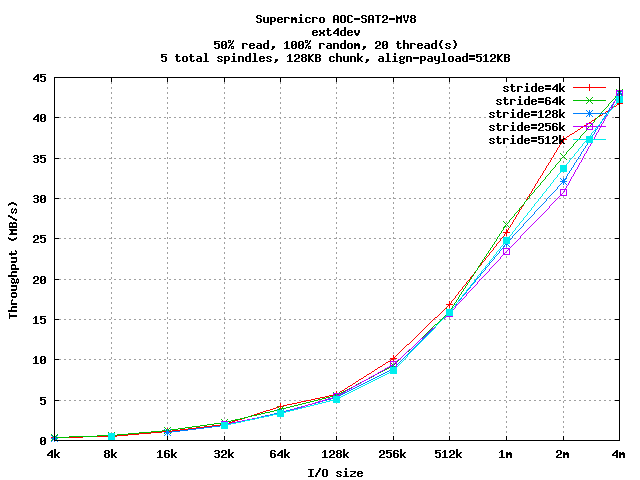
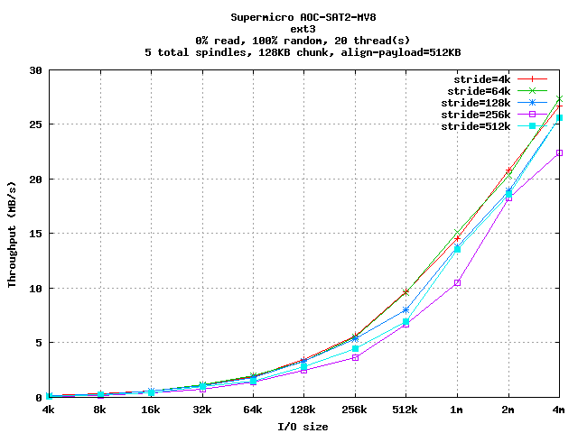
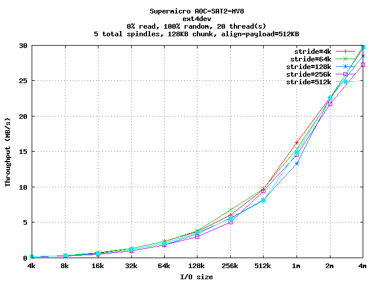